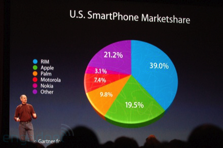
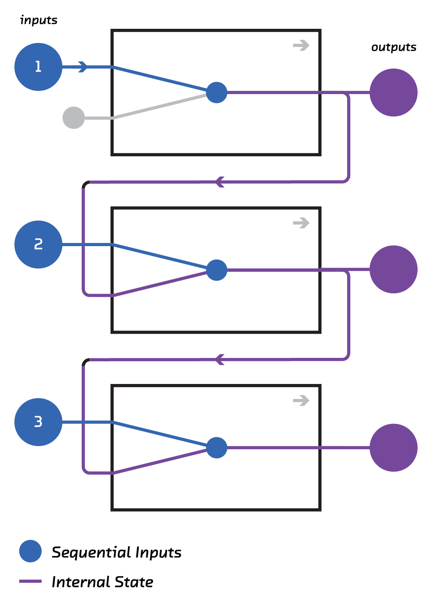

class: center, middle, full-bleed ## Beyond the word cloud #### Mike Williams • [@mikepqr](http://twitter.com/mikepqr) • <mike@mike.place> • [mike.place/2016/wordcloud](http://mike.place/2016/wordcloud) #### Fast Forward Labs • [@fastforwardlabs](https://twitter.com/fastforwardlabs) • [fastforwardlabs.com](http://fastforwardlabs.com) ??? **Hit "p" on you keyboard to toggle between full screen and presenter notes.** I work at Fast Forward Labs. We do applied research, which our clients, who are in finance, publishing and startups, subscribe to. As part of that we build prototypes. You'll see a couple of those later. One of our recent projects was on text summarization, and got me to thinking about how we visualize text. Word clouds are supposed to give an idea of the themes in a document. They do this very, very poorly. We'll get into why in a second. They are, at best, quick and dirty. But what's the alternative? What's the slow and good? Or what's quick and good? I'm going to talk about a couple of options that point the way. These are algorithms rather than visualizations, so in a sense I've only done part of the work. But I hope you'll build up some intuition for what they're capable of. And you'll see some proof of concept examples of how they can be used to visualize a document or a group of documents. And I should say, by the way, that visualization is not the only use for these algorithms. Some of them get into very fundamental ideas about how to model language, and are right now being used to make breakthroughs in translation, conversational AI, speech generation, all that fun stuff. But our focus today is visualization. --- class: center, middle ??? This is a world cloud someone made about Strata last year. I'm showing it to make two points. Data infrastructure is no longer the bottleneck for most kinds of data analysis. We have robust distributed storage, and sophisticated distributed computation. If you have an algorithm and an AWS budget, anything is possible. The problem is, when it comes to unstructured text, we don't have the algorithms. We've made huge progress in the algorithms that we use to analyse and understand structured quantitative data, but we've made much less progress in automating our understanding of text. The world cloud is in some ways the current state of the art. The algorithm mangles meaning by crudely isolating and counting words, to the extent that it doesn't provide an at a glance summary of the document. We certainly can't reform the original document from this visualization. That's lossy compression for you. But there's lossy compression and then there's word salad. We can perhaps say what words were important but we can't say what ideas are important, and after all a document is about ideas. I'd also argue that not only can we not say what ideas are important, we can barely say what words are imporant. It's incredibly hard to use as a quantitative visualization. --- class: center, middle ??? The visual perception reason is, I think, quite well known. It's also one of the reasons why pie charts are bad. Look at these three pie charts. They look pretty similar, right? --- class: center, middle ??? Now look at the data on which they are based. Clearly, these three sets of data could be very different, depending on what the categories and y-axis are. If the categories are financial quarters, and the y-axis is revenue, for example. But all that is gone when they're shown as a pie chart. Or at least it seems to be gone. And that's because humans are terrible at comparing areas. Put two lines side by side and we can tell which is longer. But put two shapes, especially ones that aren't similar in the mathematical sense, and it's suddenly extremely difficult. --- class: center, middle <img src="538.png" width="60%"> ??? Even if we make it easier, by making the shapes you're being asked to compare the same, it's still hard. These aren't even pie charts. They're just circles. And by the way, they represent the number of offices Trump and Clinton had in each state. But what if I asked you: - did Trump have more offices in Arizona or New Mexico or Colorado? - did Clinton have more offices in Virginia or Iowa? And those are bigger/smaller questions. They're hard enough. If I ask you how many times more offices Clinton had than Trump in Pennsylvania we'll be here all day. Not least because, despite the key at the top, it's not obvious whether we should be working in terms of area or radius. --- class: center, middle  ??? And sometimes we make the task extra hard by using the dreaded 3D pie chart, which requires the user to deproject a 2D projection into a 3D object. That was literally the topic of my PhD thesis in astrophysics except it wasn't pie charts, it was galaxies. So I know it's hard. I would submit that if we're asking the users of visualizations to do something we give out PhDs for in other circumstances, we're asking too much. --- class: center, middle ??? Word clouds suffer from all these problems. In order to say whether one word is more common than another - You're supposed to compare font sizes, which are linear dimensions not an area. - But we've built a visualization that implies it's area, or perhaps ink on the page, we should be comparing - Whichever is the right thing to compare, the words are very different shapes, so it's an extremely difficult task So the only analysis you can do confidently is of the glibbest, most superficial kind. --- class: center, middle ??? And an isolated world cloud raises the question: compared to what? Is hadoop being talked about a lot? Compared to last year? Compared to another conference? Compared to a corpus of books? This brings us onto the other problem with word clouds, which is in some ways more fundamental. Data is decontextualized. The only way to contextualize it is to show another word cloud. Rather than solve the problem, now you've got two problems. For example, the World Well Being Project from Penn is an incredible dataset. But, visualized like this, the best you can do is "women talk like this", "men talk like this" kind of analysis at the level of bad standup comedy. There's so much more in this data. --- class: center, middle ### ‘The only worse design than a pie chart is several of them, for then the viewer is asked to compare quantities located in spatial disarray both within and between charts’ ### — Edward Tufte ??? --- class: center, middle, full-bleed <img src="tweet3.png" width="50%"> ??? So, the word is out: word clouds are bad. The visualization itself is hard to use. And your reward for doing the hard work of parsing them is, at best, an extremely glib observation, because they've mangled ideas by crudely counting words. We'd like to move away from word clouds. But what do we replace them with? --- class: left, middle # Topic modelling # Recurrent neural networks ??? I'm going to describe two options. These are algorithmic approaches, not visualizations. Neither is a drop-in replacement for word clouds. Neither gives you an at-a-glance visual summary of a document. Neither immediately implies a visualization strategy that makes it easy to compare documents. So I don't mean to suggest that these are "better" than word clouds. That's an apples and oranges comparison. But I think they point the way to future approaches. --- class: left, middle # Topic modelling # <span style="color: #AAAAAA">Recurrent neural networks</span> ??? Firstly, topic modeling. --- class: center, middle <img src="lda_topics.png" width="60%"> ??? In word clouds we start by counting words. Topic modeling replaces that by measuring the relative importance of a higher order idea: the topic. A topic is a group of words that tend to co-occur. So, in an issue of the New York Times, words like "Syria" and "Iraq" tend to occur in the same article. Words like "baseball" and "yankees". And so on. This idea of co-occurence therefore aligns pretty well with what we mean when we say "topic" normally. And it turns out that, given a large enough stack of documents, we can learn these topics. Without reading the documents ourselves, or even understanding the language they are written in. The algorithms that do this are built into a lot of the toolkits beloved by data scientists. Topic modeling is in NLTK, gensim, scikit-learn in Python. And there's a dedicated library in R. --- class: middle ``` *0* food recipes book cookbook make cook cooking eat recipe like *1* fantasy world magic story series witch king harry lord evil *2* town people small place land live home life farm country *3* book john life story read green like man mark great *4* novel characters story reader character plot life lives readers events *5* mystery murder crime detective police case killer mysteries novel series *6* bad man gets hero just way doesn good kill guy *7* science scientific human evolution theory scientists universe physics natural earth *8* society world human man people power evil self life nature *9* philosophy religion religious ideas does philosophical thought work argument islam *10* author does point book fact authors example reader case points *11* love vampire world series romance vampires new really paranormal like *12* life father family wife man mother home woman house husband ... ``` ??? I applied one to a corpuse of Amazon book reviews. Here are the first 12 of 100 topics I found. These topics are now the lens through which we want to examine any future document. We're going to summarize it or visualize it by saying how prominent these topics are, rather than do what we do in a word cloud, which is say how prominent individual words are. --- class: center, middle ??? So having learned the topics, we look at an individual document, we learn that it's 50% politics, 30% technology and 20% genetics. Why is this better than saying the word "president" or "DNA" occurs relatively often, which is what we do in a word cloud? Well, for one thing, there's relatively few topics compared to words. A word cloud shows a lot of words, and even then it's only showing the top per cent or so of words. There might be 10,000 words in a document. You can't show them all. Now we have a more managable number of things to plot, options like bar charts become tractable. But more importantly, it encodes a more meaningful semantic unit. A word cloud considers film and movie to be different words, and indeed they are. But unless our focus is on individual word usage, more likely we're interested in themes. This approach gives us access to those. --- class: center, full-bleed, middle <img src="ldavis.png" width="90%"> ??? There are graphical tools to visualize topic models. This is pyLDAvis. There's a similar tool for R. These are super useful tools for debugging topic models, but I'd argue that they're not the kind of thing you want to show an end user. Not only because they suffer from the visual perception problems of pie charts and word clouds. --- class: center, middle, full-bleed <img src="strain.png" width="60%"> ??? So here's what I'd argue is a more humane (in the design sense) visualization. This is a summary of the 5000 reviews of this popular book on Amazon. Together these are longer than the book itself, so that's too much information to take in. But the single number (3.8/5 or whatever) is too little. By displaying a representative sample of sentences, you can learn about the diversity of ideas expressed in the reviews. The definition of representative here is in terms of topics. Topics that are important to all 5000 reviews are dominant. And rather than just say "topic 1 is important", I extract out a handful of real sentences that are dominated by topic 1. I'd argue that this summary is a much more humane visualization than a bar chart or a word cloud, for this particular use case. --- class: middle, left # <span style="color: #AAAAAA">Topic modelling</span> # Recurrent neural networks ??? But there are a couple of problems with topic modeling, at least an approach to identifying salient ideas in a document. It ignores word order, and it necessarily throws away a lot of information by reducing a document to ~100 numbers. This brings us to recurrent neural networks. Exciting breakthroughs on both these problems, order and meaning, happened in the last couple of years. In the case of retaining more meaning it's language embeddings like word2vec. And in the case of using order, it's recurrent neural networks. --- class: center, middle <img src="rnn-background_skipgram.png" width="100%"> ??? Let's look at language embeddings. I'm going to illustrate them with a particular example: word2vec. word2vec is a supervised machine learning problem. Given the input (a word), can you predict the words must likely to immediately precede and follow it. This seems like a pretty weird problem to care about, but the solution generates something very useful almost incidentally. --- class: middle, center ### “You shall know a word by the company it keeps” ### — John Firth ??? The intuition behind why we should care comes from a famous quote from the English linguist John Firth. Merely by being able to associate a word with the words that it occurs alongside with, we have acquired something like understanding. Or at least that's the claim. --- class: center, middle <img src="rnn-background_word2vec.png" width="100%"> ??? So I said the solution to the problem generates something useful almost incidentally. And it's these: word vectors. If we build a neural net that can solve the word2vec problem, deep in its guts, it constructs vectors for each word. We just rip these out and use them for other stuff. Here's an example of the value of those vectors. Words that have vectors close to each other turn out to be semantically related, and the directions and distances between word vectors turn out to be semantically significant too. The way you get from "China" to "Beijing" is the same way you get from "Germany" to "Berlin". We set out to predict the context of words, but we've produced word vectors that can be used to solve analogies. This is all kind of vague, but it turns out that coordinates with these properties are essentially encoding the _meaning_ of words into numbers. And numbers are things computers (or machine learning algorithms) can work with. This is a huge deal! --- class: center, middle  ??? So that's retaining word meaning. What about order? Arguments are built up. Hypotheticals explored. The first and last sentences carry special significance. All this, which helps a human hand-write a summary, is thrown away if you don't retain order. Traditional machine learning struggles here because of a simple almost mundane reason: documents (i.e. the input) are of different lengths. Bag of words and topic modelling are ways around this, but they all throw away order information to squeeze every document into the same size vector. But a couple of years ago, researchers figured out how to chain together neural networks (and crucially, how to train these chains). This allows input or output of arbitrary size to be fed in or out as a sequence with order. These are recurrent neural networks. --- class: center, full-bleed <img src="arstechnica.png" width="100%"> ??? We used these ideas to build Brief, which is a proof of concept browser extension available to our clients. It automatically hilights passages it considers significant. --- class: center, full-bleed <img src="arstechnica-skim.png" width="100%"> ??? It also has skim mode, which is perhaps more of a visualization. --- class: center, full-bleed <img src="alphago.png" width="100%"> ??? And here it is on a more substantial article. --- ## Summary - word clouds are bad - the visualization is hard to use - they mangle ideas by counting words - topic models are a semantically meaningful alternative to counting words - language embeddings and RNNs allow computers to operate on the meaning and structure of text - for more details see [mike.place/2016/wordcloud](http://mike.place/2016/wordcloud/) ??? One of my goals today was to convince you that word clouds are bad. The visualization itself is hard to use. And your reward for doing the hard work of parsing them is, at best, an extremely glib observation, because they've mangled ideas by crudely counting words. The techniques I described, topic models and neural nets, are not alternatives. But I hope they lead the way to alternatives. Being able to summarize and compare documents is a super power for anyone who works with language, which is all of us.